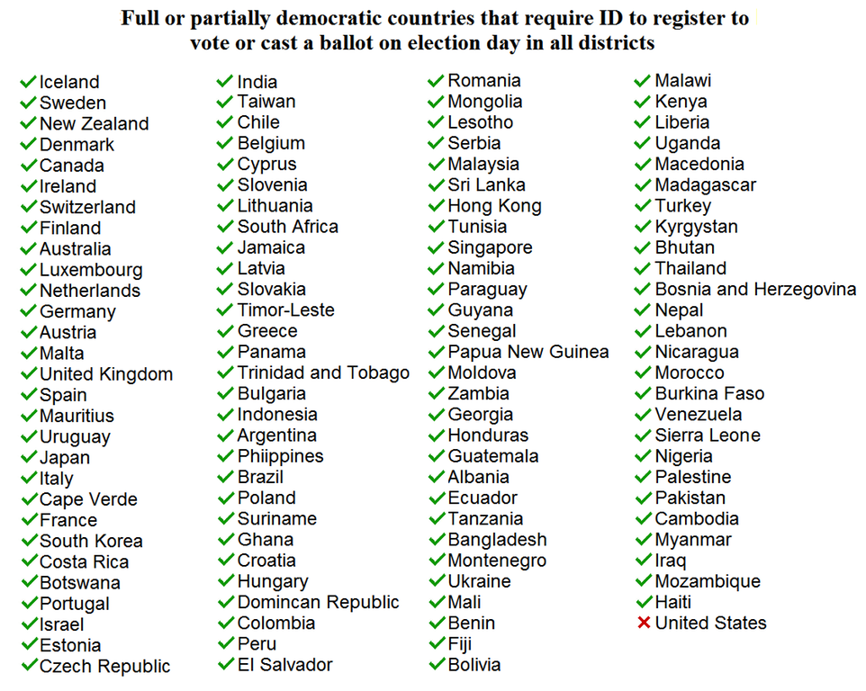
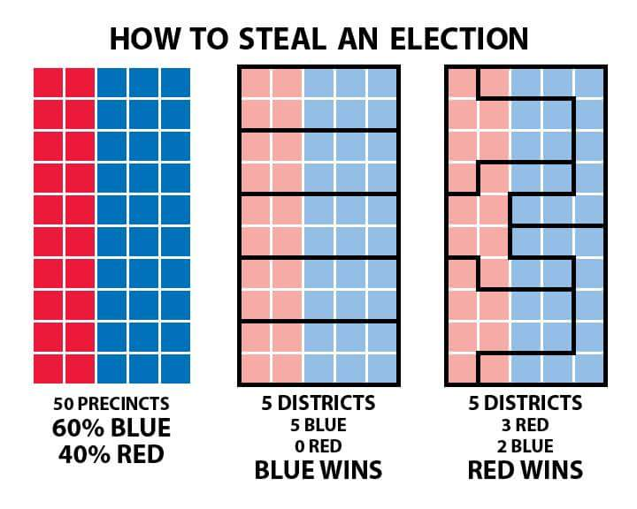

Thoughts On Democracy
Table of Contents
- 1. Why Do We Have Democracy?
- 2. Why Parliamentary Democracies Tend To Be Better Than Presidential Democracies
- 3. Why Replacing FPTP Will Not Improve Democracy
- 4. Meritocracy Combined With Sortition
- 5. Decision Making In Legislatures Versus Juries
- 6. Other Reasonable Reforms That Could Improve Democracies
- 7. Big Tent Strategy
- 7.1. The Nazis Gained Power By Being Moderate, And Then Radicalizing
- 7.2. Ancaps Who Have To Be Big Tent To Appeal To Moderate Libertarians
- 7.3. Efilists Who Have To Be Big Tent In Order To Appeal To Anti-Natalists
- 7.4. Political Factions That Have To Work Within A More Moderate Coalition
- 7.5. All The World’s Major Religions Evolved Into Various Different Branches
- 7.6. Intragroup Conflict
- 7.7. Conclusion
Note: I haven’t finished writing this file yet.
1. Why Do We Have Democracy?
How to govern society is one of the oldest philosophical problems, and while there aren’t any perfect solutions that can completely eliminate corruption, there are some pragmatic principles and heuristics that we can follow to generate a better society.
The main reason why democracy is so prevalent in western societies today is that it’s a way to form compromises between opposing political ideologies, platforms, and ethics. This is the only reason why the Democrats would let Donald Trump be the president of the US, or why Republicans would let Joe Biden be the president of the US, or why any political faction would put up with laws, legislation, politicians, etc. that they detest.
All political systems are oligarchies, regardless of how they present themselves. Leaders of centralized systems know almost nothing about a lot of things, rather than a lot about a few things. It’s not possible for a single person to rule an entire country all by themselves because they need subordinates who will enforce their rule of law. Likewise, it’s equally impossible for a democracy to work effectively unless it has representatives and a hierarchy of other government officials. It has to be that way, but it also creates problems with running the society.
{kind=link}
Related: Democracy is a Tragedy of the Commons.
1.1. Problems With The Electoral Process
{kind=link}
1.2. What Most People Really Mean When They Say “Go Vote”
When most people tell others to “go vote”, they don’t really mean “go vote”. What they’re really saying is “go vote for my guy”. For example, young people tend to vote Democrat, so Democrats will send out hordes of people to college campuses to sign people up, drive them to polls, etc, while Republicans will try to keep college students from voting by making it arbitrarily difficult. Likewise, “Pro-voting” organizations typically target young people and POC, but you’ll never see them visiting rural America or manufacturing and construction sites to get those demographics to vote, and it’s not hard to figure out why. None of it is driven by genuine pro or anti voting sentiment. It’s all just gamesmanship.
2. Why Parliamentary Democracies Tend To Be Better Than Presidential Democracies
Although I haven’t read the book itself, I agree with pretty much all the arguments against Presidential Democracies that are stated in this Wikipedia summary of the book: Bad for Democracy: How the Presidency Undermines the Power of the People by Dana D. Nelson.
Although parliamentary democracies tend to be better than presidential democracies, it probably wouldn’t have made much historical difference if the United States had a parliament until the 1970s. During Jimmy Carter’s presidency, the US could’ve removed Jimmy Carter from office if it had a parliamentary democracy instead.
Up until that point, presidential democracies were about as good as parliamentary ones. The reason why that changed was when:
- The country elected a weak head of government who couldn’t leave office until his term was over,
- This was long before the Internet started. The Internet has caused democratic backsliding by isolating people into political ideologies in their own online Internet bubbles and echo chambers, This makes the presidential system less stable since more attention started being focused on the President and viewing the Presidency as the key to fixing all the countries problems, and
- Power started shifting towards the Presidency, in large part because the Presidency and its executive orders have become the only fast and effective way to change the federal law of the land due to the democratic backsliding and inability of political cliques to compromise with each other.
Another downside of presidential democracies is that they caused people to focus less on state and local elections, and only focus on one big election at the national level. Since people have selective attention, and can therefore only focus on a few elections at a time, it is disadvantageous to the democracy’s functioning when everybody focuses on just one election for only one office every four years. It would be better if people focused on the state and local elections that could potentially affect them even more. Parliamentary democracies are better for this.
3. Why Replacing FPTP Will Not Improve Democracy
Critics of First-Past-The-Post argue that it’s unfair because they perceive it to be a winner-takes-all system that denies minority parties from having any real power in the government. In particular, the people who hate FPTP the most are the ones who are tired of always siding with one side or the other. Theoretically, proportional representation or ranked voting would be more democratic because it would be more reflective of the will of the people. A lot of this assumes that democracy doesn’t or wouldn’t encounter the problems of The Deep State and Myth of Democracy. Putting that aside though, I argue that FPTP would not be more representative of the people.
For starters, most under-represented ideologues who are keen to replace FPTP overlook that their democratically under-represented political opposites will also gain more representation too if FPTP is replaced. This would cancel out almost anything that they could hope to gain. For instance, when I was Libertarian, I used to believe that the United States would be better off it eliminated FPTP since that would enable Libertarians to gain greater representation in the Government, but once I realized that opposing ideologies like the Social Democrats, Green Party members, Neoliberals, Pro-Trumpers, the Religious Right, etc would also gain greater representation, I realized that this would be a loss cause. The result would only be political gridlock, and it wouldn’t be any different than how the Libertarians already have their own small faction inside the Republican Party. The same reasoning applies to other democratically under-represented political factions.
Proportional representation already exists in FPTP, but in a different way. Instead of having proportional representation inside the government’s legislature as a whole, political factions have proportional representation inside the main political parties. For example, the Republican Party in the United States consists of factions such as conservatives (represented in Congress by the Republican Study Committee and the Freedom Caucus), moderates (represented in Congress by the Republican Governance Group), libertarians (represented in Congress by the Republican Liberty Caucus), Pro-Trumpers, etc. Likewise, the Democratic Party of the United States consists of factions like the Blue Dog Coalition representing conservative and moderate Democrats, the New Democrat Coalition representing moderate and liberal Democrats, and the Congressional Progressive Caucus representing liberal and progressive Democrats.
So FPTP doesn’t really reduce the range of acceptable political thought within the status quo after all. Once the coalitions form inside the political parties, they then elect their leaders and choose their direction according to their constituent percentages. Once there are exactly two solid factions competing against one another (Democrats vs Republicans), the result is less political gridlock… except for when the Legislature and Presidency are not decisively controlled by the same party, in the case of a Presidential Democracy. There are also other cases where proportional representation caused political grid-locking:
- One of the reasons why the Weimar Republic failed was that it had a proportional representation democracy that caused gridlock within the legislature, thus causing political power to transfer to the executive branch in order to actually get anything done.
- When New Zealand switched to a proportional representation democracy, there was no majority in the parliament from 1996 to 2017.
- Italy also faced similar gridlock when they switched from FPTP to a proportional representation system in 1993, and they had to rescind it to a mixed electoral system in 2017 since it made the government more unstable.
4. Meritocracy Combined With Sortition
Most importantly, the oligarchical structure of a society should be meritocratic.
Wikipedia: Wisdom of the Crowd.
The court system uses sortition for reaching verdicts in the form of randomly selected juries, yet sortition is not used for determining the laws as well.
5. Decision Making In Legislatures Versus Juries
It is peculiar how the legislative and jury processes are so radically different from each other. In a democracy, decisions are allowed to be based on partisanship, emotions, conflicts of interest, and personal morals. And that’s even strongly encouraged. The selection process for the people who make legislative decisions regarding society is also determined by election campaigns and voting.
On the other hand, the decision-making process in the court system is completely different. People are forbidden to be selected to make the decisions if they will have a conflict of interest in deciding the verdict, or if they are likely to be influenced by their morals, emotions, and personal biases. In addition, the selection process for the people who make decisions is also determined by random selection (sortition), in contrast to the voting system used by democracies.
It’s odd that most people never question why these decision making processes are so different from each other. Yes, they belong to different branches of government, but they are both making important decisions about society. Besides the appeal that a random selection of people on the jury can seem more fair and unbiased, I can’t think of many other reasons why the decision-making processes for the legislature and court system should be much different from each other.
How many things can go wrong with a system that emphasizes reason, logic, and non-partisanship? On the other hand, you could easily imagine thousands of different ways how a system that allows emotions, partisanship, non-thorough evaluation of the evidence, and conflicts of self-interest to influence the decision making could go wrong. Democratic legislatures should work more similarly to the judicial system.
6. Other Reasonable Reforms That Could Improve Democracies
Consider a list of ideas that could potentially improve how our democracies function:
- Implement voter-ID laws with government-issued ID cards (free for all citizens)
- Have more educated voters (see: Why It’s So Difficult To Change People’s Minds)
- Restructure the government in such a way that discourages corruption and corporatocracy
- Completely eliminate gerrymandering: Remove party affiliations at the time of voter registration. Do not track home addresses on ballots. Voter ID is done through government-issued ID cards, but does not require you to retain the information together. Now politicians don’t know where you live and can’t draw districts with biases
- Replace the electoral college with the popular vote
- Lower the minimum voting age to 16 years old?
- Implement consecutive and/or lifetime term-limits for all legislative and bureacratic offices
- Pass laws regulating campaign finance
- There should be the politician cut-off age around the retirement age
- This would prevent the likelihood that people with dementia (e.g. Joe Biden) or people with perverse incentives get elected
- Localism
- Et Cetera


In situations where there is no single right answer and/or there are different competing values and value systems, democracies are often proposed as a potential solution. However, Reason is a superior decision maker to Democracy, so decisions should made with Reason instead of Democracy whenever possible.
Democracy an be a solution for resolving multiple different values, perspectives, and ideologies, as imperfect as it may be. Nevertheless, I agree with all the criticisms in this blog post The Myth of Democracy, and I believe that we can make a system with similarities to democracy that is still better than anything that’s ever been tried before.
Approval Voting: For every choice/option/candidate, everybody votes yes or no to signal whether or not they approve of the option. The option(s) with the most approvals is/are selected. People can vote multiple times, vote once, or not vote at all. This method is quick, simple, will work for most situations, and is better than first past the post voting. CGP Grey has a video explaining how Approval Voting works.
Single Transferable Voting: The single transferable vote (STV) is a voting system designed to achieve proportional representation through ranked voting in multi-seat organizations. Under STV, an elector (voter) has a single vote that is initially allocated to their most preferred candidate. Votes are totaled and a quota (the number of votes required to win a seat) derived. If their candidate achieves quota, he/she is elected and in some STV systems any surplus vote is transferred to other candidates in proportion to the voters’ stated preferences. If more candidates than seats remain, the bottom candidate is eliminated with his/her votes being transferred to other candidates as determined by the voters’ stated preferences. These elections and eliminations, and vote transfers if applicable, continue until there are only as many candidates as there are unfilled seats.
7. Big Tent Strategy
Although revolutionaries of small nascent movements usually want to start being radical from the very beginning, they often start off by downplaying their ambitions and forming Big Tent coalitions because they have to. When they’re downplaying their ambitions, they’re essentially Motte-and-Baileying everybody on what they really want to do. Unless they start off as a Big Tent, they will be too small to actually change anything and make stuff happen. Once the revolutionaries become big enough to the point where they don’t have to rely on being coalition movements anymore, they transition towards their extremist ulterior motives because that was the plan all along. The only purpose served by the Big Tent was to gain the momentum necessary for accomplishing that.
7.1. The Nazis Gained Power By Being Moderate, And Then Radicalizing
A notable historical example is how the Nazis attempted a revolutionary strategy when they attempted to overthrow the government during the Beer Hall Putsch in 1923. The revolutionary approach had failed, so they decided to obtain power via reformist and legal means instead. In the May 1928 federal election, they only achieved 2.6% of the vote, but then they formed a temporary alliance with the larger and less extremist German National People’s Party (DNVP). This alliance (as well as the onset of the Great Depression and other things) contributed to weakening the DNVP’s share of the vote in the September 1930 election to 7%, while boosting the Nazis to win 18.2% of the vote that same year. By temporarily using a moderated Big Tent approach, the Nazis gained the propulsion that they needed to seize power and start radicalizing towards their true ambitions.
After their victory in the 1933 election, some of the Nazis were plotting to create an even more radical version of the Nazi Party that would seize power via a coup d’état and start a war. Hitler wouldn’t allow this though, so he ordered the assassination of Ernst Röhm in order to maintain his grip on power. It’s possible that might have prevented the Nazis from starting WWII on an earlier date. If that’s true, then it was a smart move for the Nazis to take a moderate position on politics for the time being while gradually radicalizing.
7.2. Ancaps Who Have To Be Big Tent To Appeal To Moderate Libertarians
A second example: When I used to be an Ancap in college, the club president (also an Ancap) and I (the vice president) were trying to recruit Libertarians to join the Libertarian chapter on our college campus. We both agreed that if our club ever did get big enough, we were going to transition it away from being a Libertarian club to being an Ancap / Voluntaryist club. Although we both wanted to start an Anarchist club from the beginning, there’s no chance that ever would’ve gained much traction because that would’ve been too extremist for anybody to ever consider joining, so we had to settle for a moderate Libertarian club that was open to anybody and hope that it would recruit enough members and transition towards being an Anarcho-Capitalist club instead. We actually gathered a couple dozen members, but eventually I left the club after I rejected Anarchism and Libertarianism. I don’t know what happened to it after that.
7.3. Efilists Who Have To Be Big Tent In Order To Appeal To Anti-Natalists
A third example of this would be how Amanda Sukenick and other Efilists are trying to co-opt the much larger Anti-Natalism movement and “Efilize the Anti-Natalism movement from within”, in an effort to recruit more potential Efilists. If the Efilism movement ever grows large enough, Sukenick is definitely going to stop promoting Anti-Natalist activism and start pushing Efilist activism instead. She has said all this on video.
7.4. Political Factions That Have To Work Within A More Moderate Coalition
All political factions that are apart of a larger, more moderate coalition are also using the Big Tent Strategy to gain power and achieve some of their objectives, even though it requires sacrificing their more radical yearnings. Every faction in the coalition is only part of the coalition for convenience, and if any of the factions see an opportunity to persuade, influence, or manipulate the others towards their cause, they’ll readily do so. Whenever a bunch of factions unite together to form a coalition, each faction is hoping to eventually out-compete the other factions for control of the entire coalition once the coalition’s goal is finished.
7.5. All The World’s Major Religions Evolved Into Various Different Branches
Religions (and ideologies in general) have a tendency to branch off into different subgroups over time.
- Judaism branched off into Christianity, which branched off into Catholicism, Eastern Orthodox, Protestantism, Coptic Orthodox, Ethiopian Orthodox, Mormonism, Jehovah’s Witnesses, Christian Scientism, Seventh Day Adventists, etc.
- Islam branched off into Sunni Islam, Shiism, Ibadi Islam, etc.
- Hinduism branched into many different local beliefs.
- Buddhism branched into Theravada, Mahayana, Vajrayana Buddhism.
In a sense, each one of these major world religions can be considered a big tent of sorts, especially from the perspectives of outsiders. But internally within each tent, some (perhaps most) of the people in each of the different sects don’t see members of the other sects as belonging to the same religion. For instance, many Sunni Muslims don’t consider Shiite Muslims to be true Muslims and they view them as belonging to an entirely different religion. The same goes for how Catholics often view Protestants, how Christians often view Mormons or Jehovah’s Witnesses, and so on. Just like every big tent, there are different factions inside the tent that gatekeep and insist that the other factions under the tent are not true believers. On the other hand, outsiders that oppose the big tent movements in question will tend to view and treat all the factions of the tent as belonging to the same ideology, as outsiders are less likely to understand what makes each of the different factions different from each other.
Ideologies need labels in order to propagate effectively since labels define the “in-group” and the “out-group”. Being able to identify with an already established label can help an ideology propagate better (as opposed to a newly made-up label), which may help to explain why Shiites are likely to identify themselves as legitimate Muslims and why Protestants view their religion as having more similarities than differences to Catholicism, even though Shiism and Protestantism both branched off an already established religion whose members are more likely to see the new movements as being heresy.
7.6. Intragroup Conflict
7.7. Conclusion
When a big tent movement arises, it’s pretty typical for the tent’s ideology and ideals to evolve over time or get watered down, especially if it propagates to many different peoples in high numbers. The bigger the tent, the more likely some faction and/or another is going to diverge into a distinctly different ideology that only has veins of similarity to the original big tent. At the same time however, a lot of what enables a successful big tent movement to propagate effectively comes from its number of members. Big Tents are best at accomplishing short-term coalition goals and propagating core ideas to a somewhat wider range of people, but they will always have the downside that the perceived differences between the tent’s members will come to outweigh their similarities and cause the tent to evolve, diverge, or fall apart entirely from within.